Comprehensive approach to analyzing the genetic diversity of potato using various statistical and multivariate analysis methods in R.
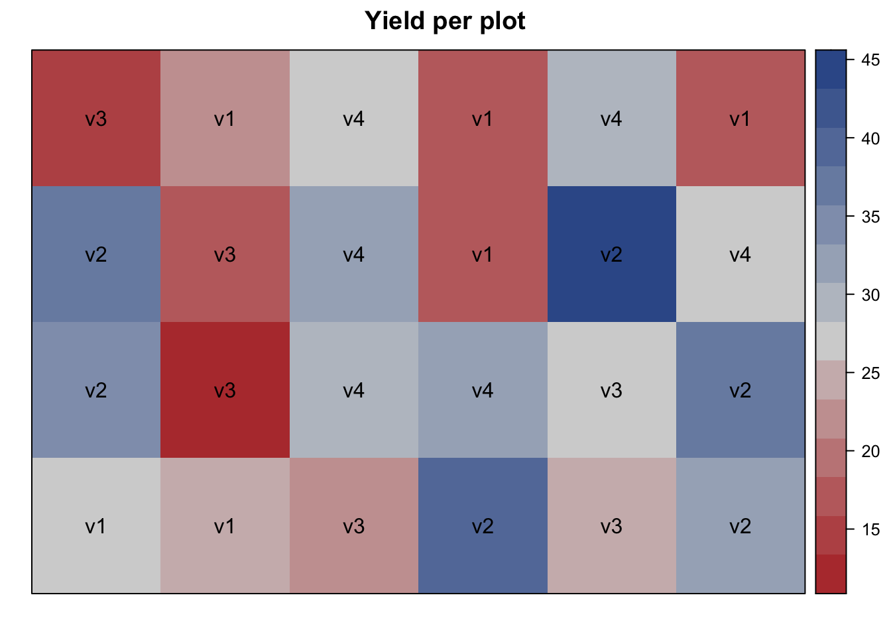
El diseño más sencillo desde el punto de vista de la asignación de unidades experimentales a los tratamientos.
Row-column design involves arranging experimental units into a grid of rows and columns.
Recuerden: donde hay voluntad, hay camino, y con la guía divina, los límites son solo el comienzo de nuevas posibilidades.
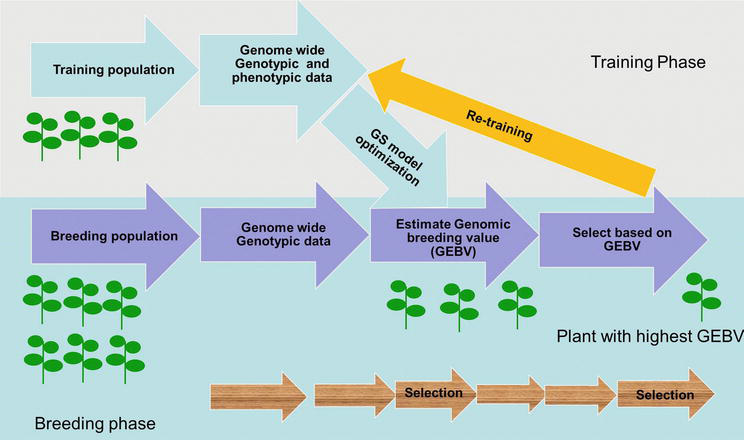
AI in molecular plant breeding data science is not just a technological advancement; it’s a paradigm shift.
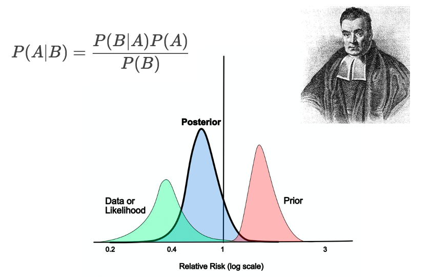
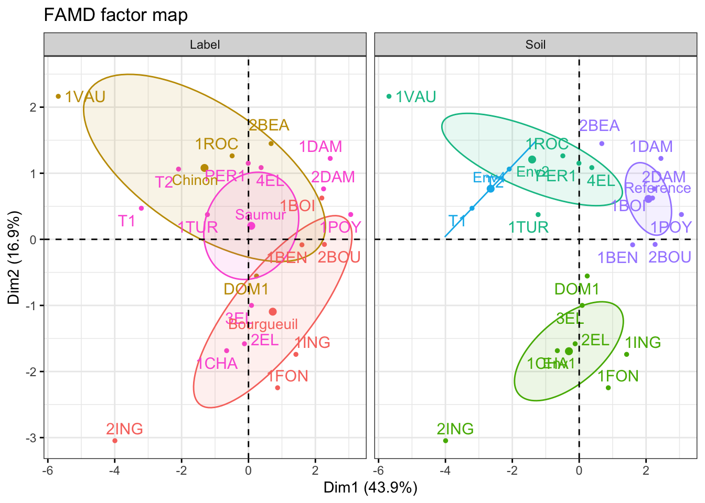
Factor Analysis of Mixed Data (FAMD) is a powerful statistical technique used to analyze datasets that contain both numerical and categorical variables.
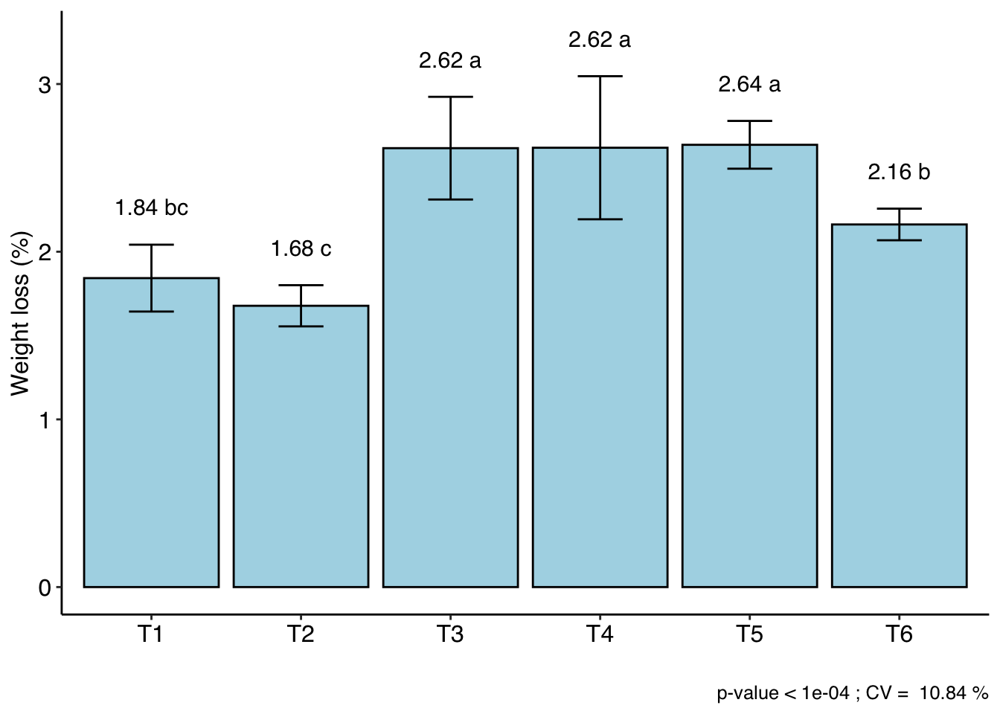
CRD is a statistical method that serves as a robust tool for comparing the effects of different treatments on a single factor within crop experiments.
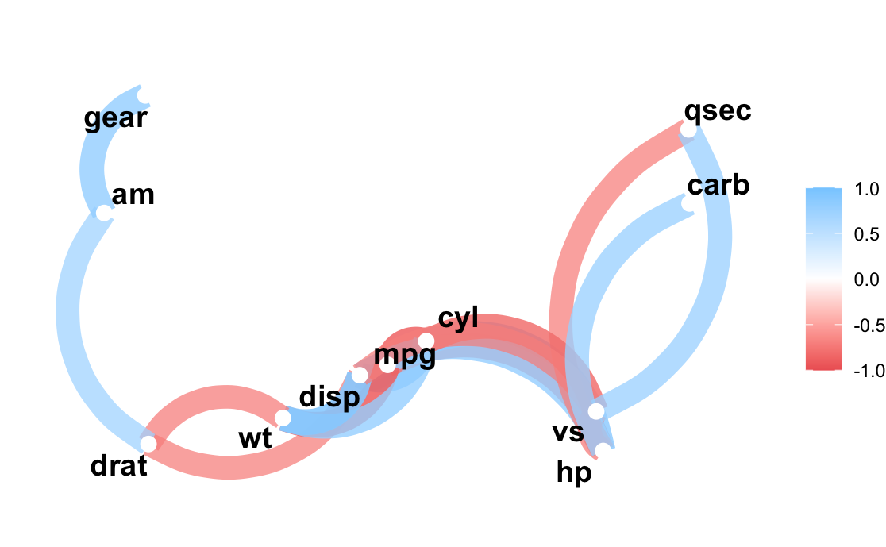
It is a tool for exploring correlations, and it makes it possible to easily perform routine tasks when exploring correlation matrices.
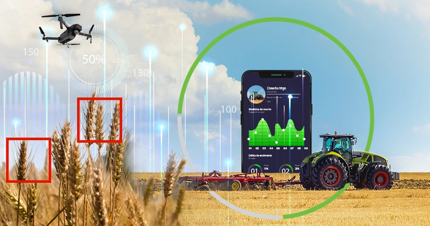
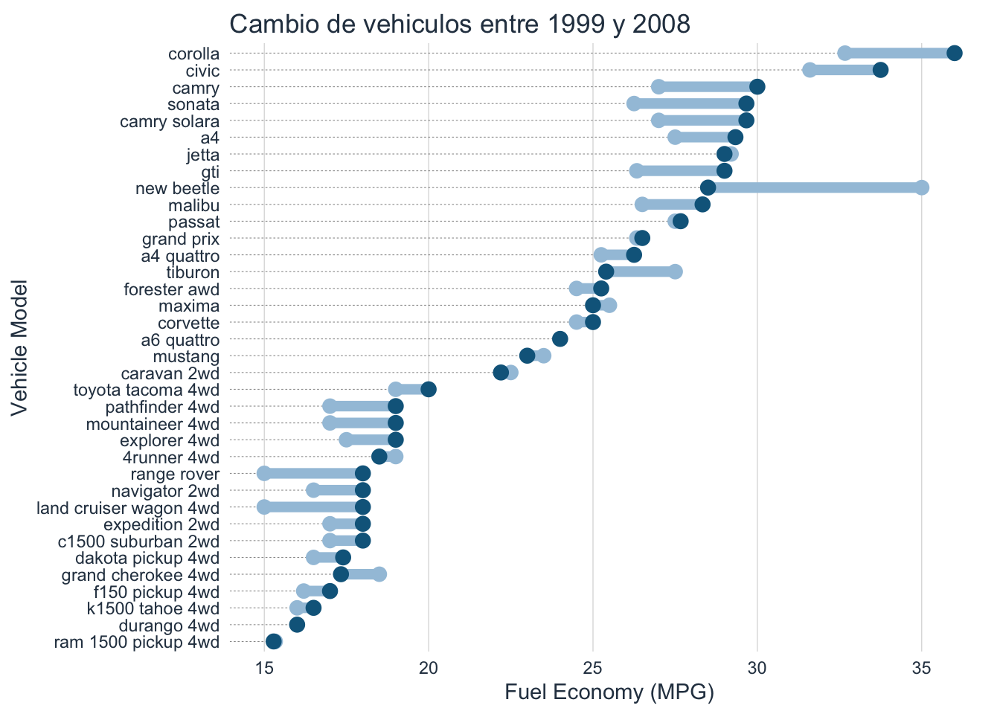
Una manera de comparar los cambios en una figura.
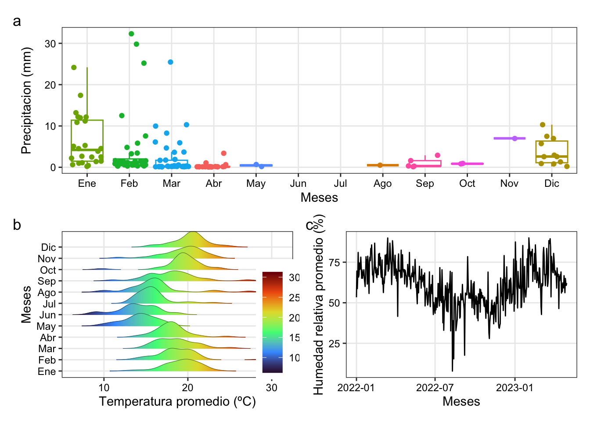
Mostramos unas figuras relacionadas a datos climaticos, las cuales pueden ser utilizados para presentar en manuscritos.
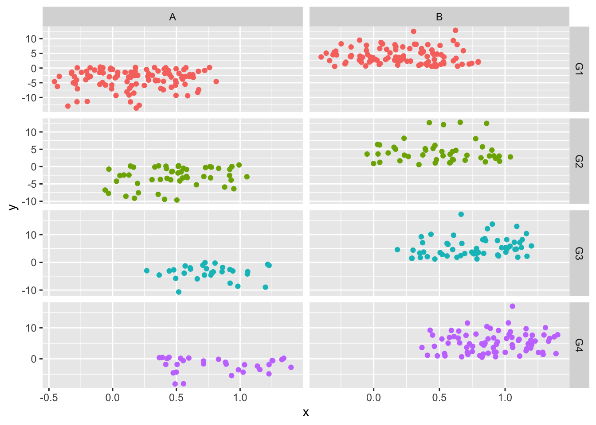
Julia es un lenguaje de programación de alto nivel, diseñado específicamente para el cómputo científico y la estadística.
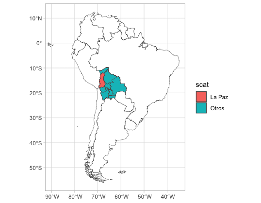
Vamos a generar mapas de Bolivia.
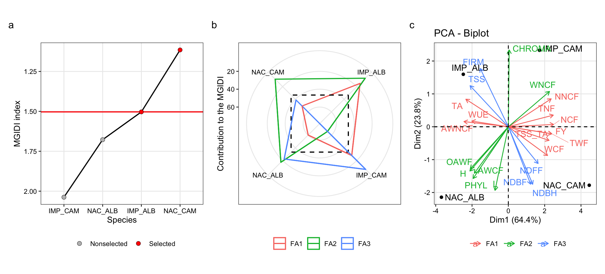
Uso de datos agrícolas y metodologias básicas para un tesista o investigador despues de haber culminado la etapa de campo.
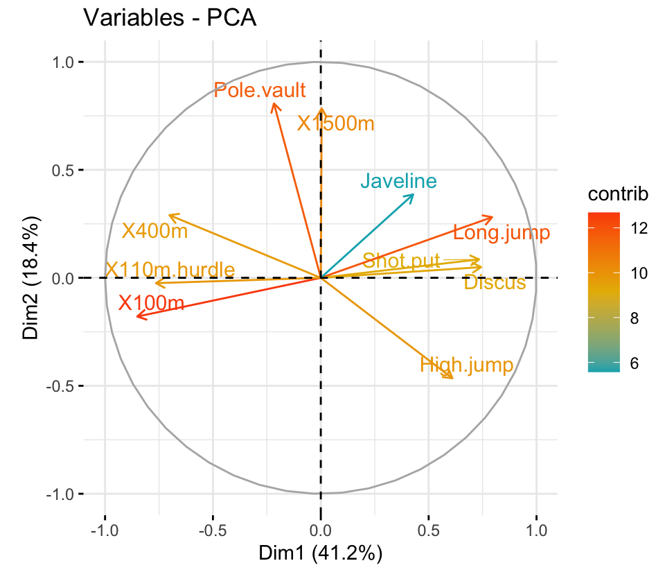
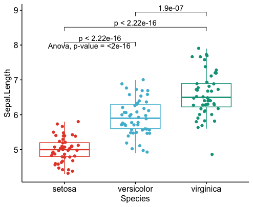
La figura de prueba de promedios de TukeyHSD es una buena opción, ya que incluye p-valor del ANVA y de la comparación de medias entre tratamientos.
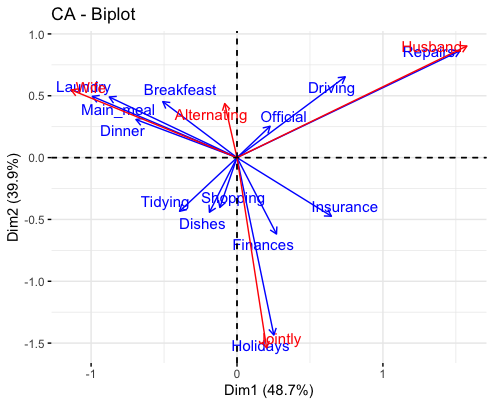
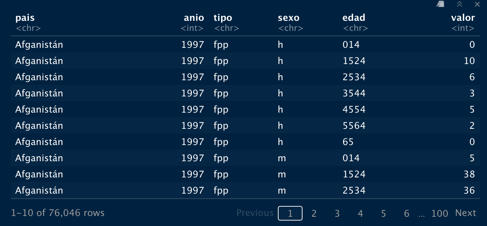
Es un ejemplo de caso extraido del libro R4DS.